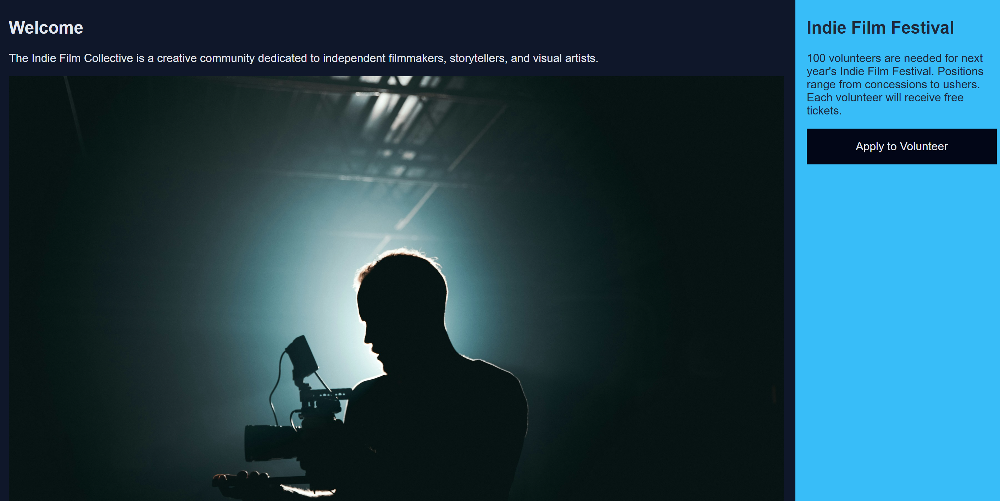
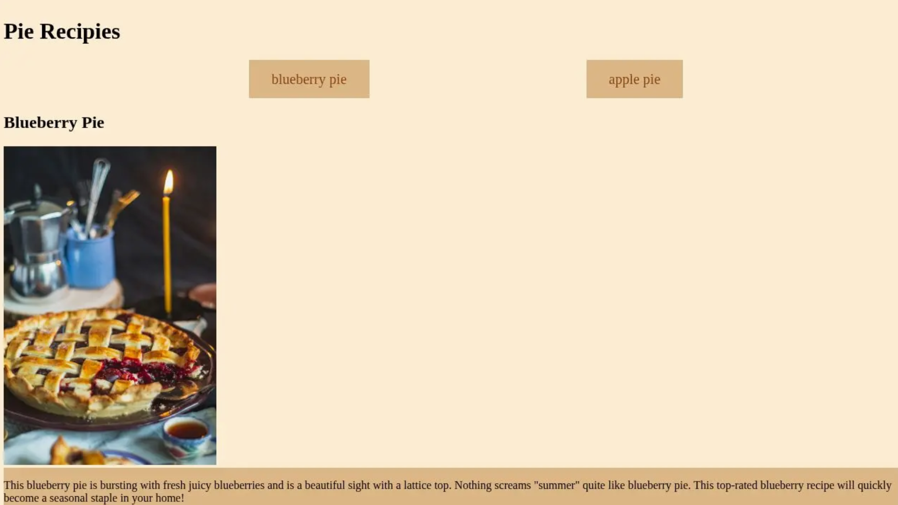

Build-5
Indie Film Collective Webpage
This was an assignment to create a responsive web page using HTML and CSS. In this Build, we were to create a professional multi-page website. The goal was to build, organize, and publish a complete website using industry-standard tools and practices.
Build-3
Pie Recipes Webpage
This was an assignment to integrate semantic HTML foundations and CSS styling principles with advanced layout systems. The objective was to move beyond basic styling by using CSS Grid for the overall page architecture and Flexbox for precise component alignment, such as navigation and content cards. This project was completed in the CodePen sandbox.